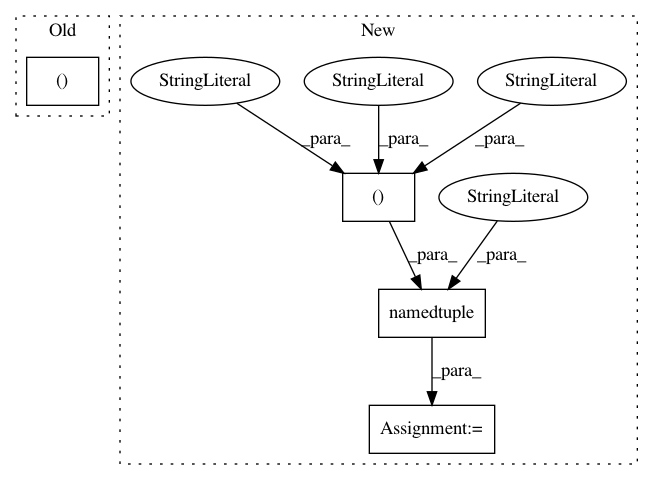

c8ea1f53c2042d8df4c0566d8f1367ae38c194a4,scipy/stats/_binned_statistic.py,,binned_statistic_2d,#Any#Any#Any#Any#Any#Any#,152
Before Change
medians, edges, xy = binned_statistic_dd([x, y], values, statistic,
bins, range)
return medians, edges[0], edges[1], xy
def binned_statistic_dd(sample, values, statistic="mean",
After Change
medians, edges, xy = binned_statistic_dd([x, y], values, statistic,
bins, range)
Binned_statistic_2dResult = namedtuple("Binned_statistic_2dResult",
("statistic", "x_edge", "y_edge",
"binnumber"))
return Binned_statistic_2dResult(medians, edges[0], edges[1], xy)
def binned_statistic_dd(sample, values, statistic="mean",
In pattern: SUPERPATTERN
Frequency: 3
Non-data size: 4
Instances
Project Name: scipy/scipy
Commit Name: c8ea1f53c2042d8df4c0566d8f1367ae38c194a4
Time: 2015-05-04
Author: aeklant@gmail.com
File Name: scipy/stats/_binned_statistic.py
Class Name:
Method Name: binned_statistic_2d
Project Name: scipy/scipy
Commit Name: c8ea1f53c2042d8df4c0566d8f1367ae38c194a4
Time: 2015-05-04
Author: aeklant@gmail.com
File Name: scipy/stats/_binned_statistic.py
Class Name:
Method Name: binned_statistic
Project Name: scipy/scipy
Commit Name: c8ea1f53c2042d8df4c0566d8f1367ae38c194a4
Time: 2015-05-04
Author: aeklant@gmail.com
File Name: scipy/stats/_binned_statistic.py
Class Name:
Method Name: binned_statistic_dd